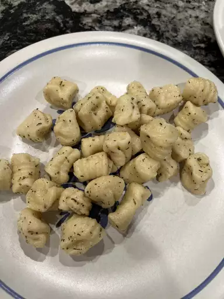

Gnocchi

What Is Gnocchi?
Gnocchi (singular gnocco) are Italian dumplings made with flour, eggs, and potatoes. Gnocchi can be served in tomato sauce, tossed with pesto, or sautéed with butter and herbs.
Gnocchi Pronunciation
"Gnocchi" can be difficult to pronounce for native English speakers. For future reference, gnocchi is pronounced NYOW-kee.
Ingredients
- 2 potatoes, peeled
- 2 cups all-purpose flour
- 1 egg
Directions
- Bring a large pot of salted water to a boil; add potatoes and cook until tender but still firm, about 15 minutes.
- Drain, cool, and mash with a fork or potato masher.
- Combine 1 cup mashed potato, flour, and egg in a large bowl.
- Knead until dough forms a ball.
- Shape small portions of the dough into long "snakes".
- On a floured surface, cut snakes into 1/2-inch pieces.
- Bring a large pot of lightly salted water to a boil.
- Drop in gnocchi and cook for 3 to 5 minutes or until gnocchi have risen to the top; drain and serve.
back to main